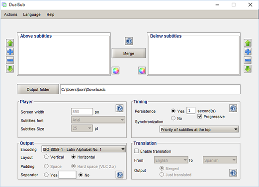
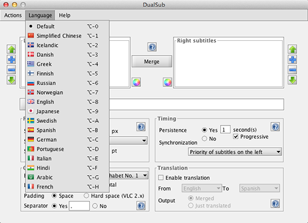

Downloads
Source code- 

- 
DualSub has been coded in Java and it is packaged for different platforms:
Mac OS X
Installer for Mac OS X. Open DMG file, then drag and drop DualSub to Applications.
Download
Cross-platform
Runnable JAR archive. Run DualSub using the following command:
java -jar dualsub-1.1.0.jar
Download